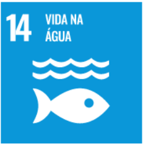

Resumo
Estudante de Engenharia da Computação, com formação técnica em Desenvolvimento de Sistemas e foco em desenvolvimento de software backend. Experiência com Java (Spring Boot), APIs REST e bancos de dados relacionais e não relacionais, atuando em ambientes colaborativos e ágeis. Vivência internacional em intercâmbio na Inglaterra, com aprimoramento do inglês e visão global. Motivada por inovação, qualidade de software e soluções tecnológicas de impacto em larga escala.
ODS que pretendo contribuir

Habilidades
- Java (POO, Spring Boot)
- Metodologias Ágeis (Scrum e Kanban)
- Versionamento de Código com Git
- Proatividade e senso de responsabilidade
- Trabalho em equipe multidisciplinar
- Facilidade de aprendizado e adaptabilidade
Educação
2023 - 2027 | Universidade Tecnológica Federal do Paraná
Engenharia de Computação
2020 - 2021 | ETEC
Técnico em Desenvolvimento de Sistemas
Hobbies
- Academia
- Wakeboard